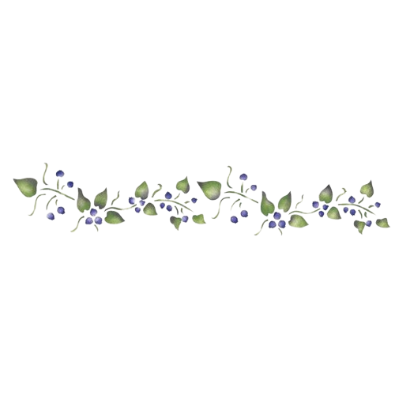
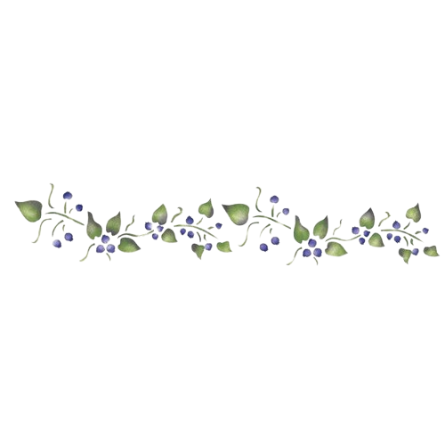
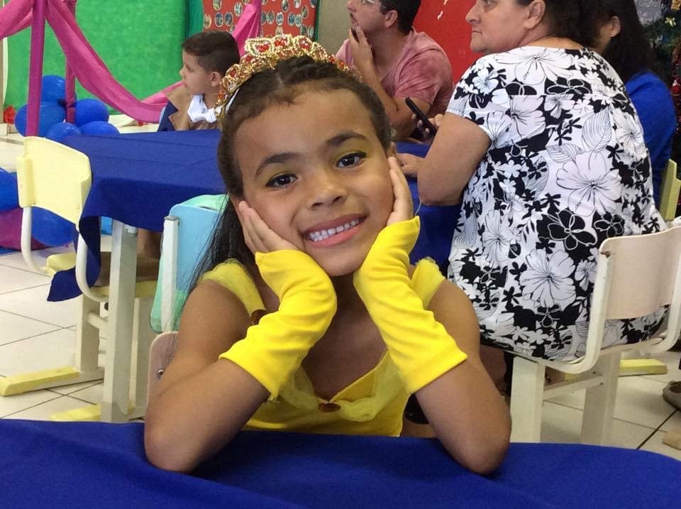
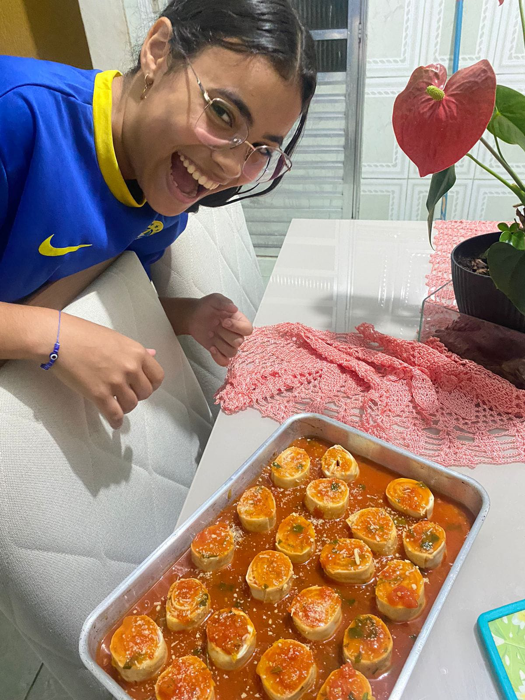
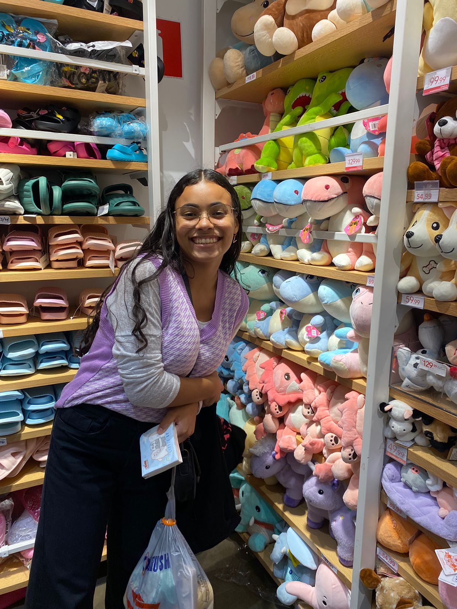
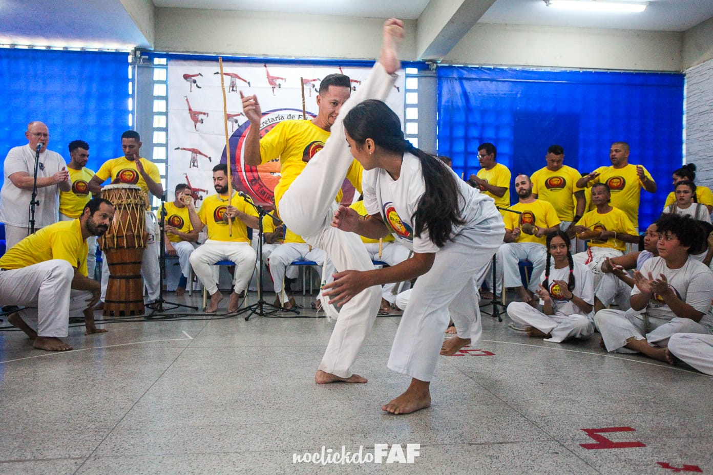

|  | VICTÓRIA |
 |
AKEMI |
|  | VICTÓRIA |
|
AKEMI |
|  | Victória Akemi Murakami tem 15 anos, nasceu no dia 12/08/2008. Ela é corintiana, sempre teve o Corinthians como time do coração. A Victória é tímida as vezes, mas adora conversar. |
| A série favorita da Victória é The Vampires Diares, ela gosta de assistir Doramas, séries de ficção científica e ler livros de romance. Ela também gosta muito de dormir e comer, a sua comida favorita é lasanha e churrasco. |  |
|  | A Victória gosta de gatos e e ama o Bairro da Liberdade. Ela gosta bastante de praticar esportes, e já fez ballet, jazz, natação e hoje ela faz capoeira. |
| A Victória faz capoeira há um ano. Ela pegou a segunda graduação esse ano, está na graduação de fugitivo. |
|  | De acordo com ela, quando ela faz capoeira ela sente liberdade,e acha os jogos e as acrobacias de capoeira muito bonitos. |
| Um dia com a Victória |